The slide of the lecture is on the left, the same figure on the right, computed in the browser from the same data. The ▶ button moves the parameter step by step.
The Normal Distribution · The Lognormal Distribution · The Central Limit Theorem · Moments and the Shape of a Distribution · Testing Normality: Jarque–Bera and QQ Plots · The Student-t Distribution · Stylised Facts of Returns
The Normal Distribution
The 68–95–99.7 Rule
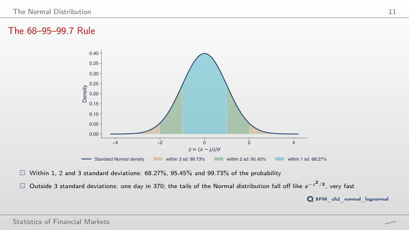
Answer
About 43 times. P(|Z| > 4) = 0.0063%, one day in 15,787, about 63 years of trading at 252 days a year; P(|Z| > 3) = 0.27%, one day in 370. The ratio of the densities at 3 and 4, φ(3)/φ(4) = 33, is not the ratio of the tail probabilities. At 6 standard deviations, the Normal distribution gives one day in 507 million.
How Rare Are Large Moves under the Normal Distribution?
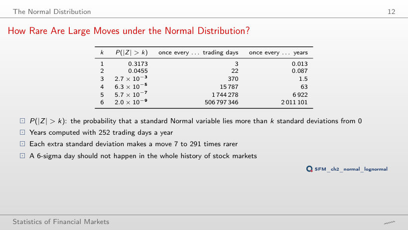
Normal distribution: P(|Z| > k) and how often such a day occurs; the observed days of the chosen series
Share of days within k standard deviations of the mean (the 68–95–99.7 rule)
Answer
79.1%, more than under the Normal distribution. A few extreme days inflate the standard deviation, and most days are small relative to it: the centre of the distribution is taller. Within two standard deviations the share is 95.3%, close to 95.45%; beyond three standard deviations there are 62 days instead of 11.3. For the eight series, the share within one standard deviation is between 75.7% (BRD) and 81.4% (BET).
Worked Example: Large Losses of the S&P 500
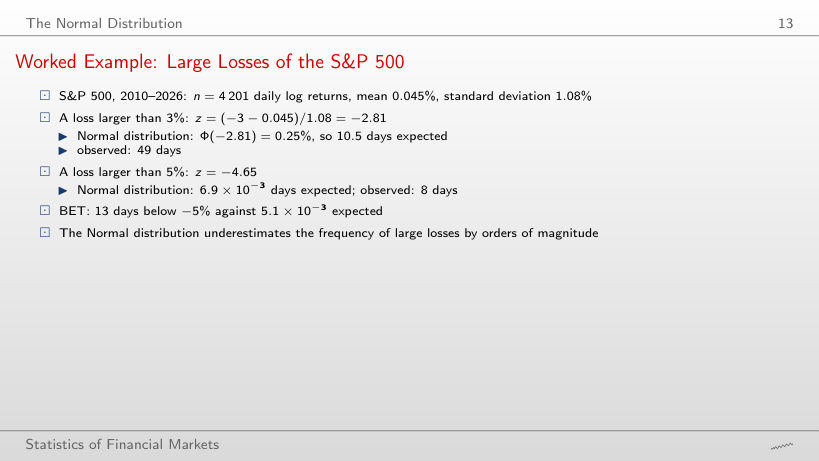
Days with a log return below −x%: observed and expected under the Normal distribution
Worked example: losses larger than x%
Answer
Fewer: 512 days, against 813 expected. Bitcoin’s standard deviation is 3.49%, so −3% is only 0.89 standard deviations below the mean, between the centre and the tail, where heavy-tailed returns have fewer days than the Normal distribution. Heavy tails show at thresholds of several standard deviations: below −10% (2.90 standard deviations), Bitcoin has 56 days, against 8.1 expected. A threshold in % compares series only when their volatilities are similar.
The Lognormal Distribution
Lognormal Densities (SFElognormal)
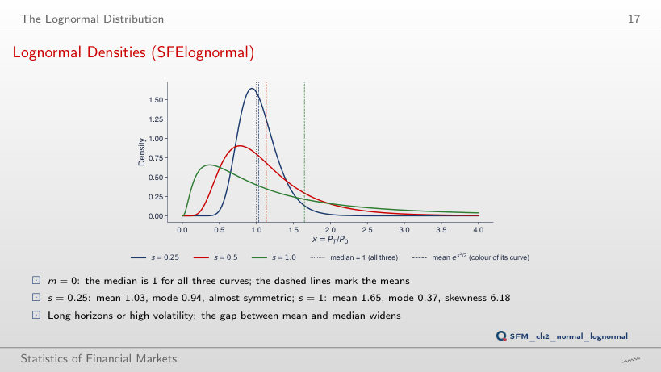
Answer
The median stays at 1, because em does not depend on s. The mean es²/2 rises to 3.08 and the mode e−s² falls to 0.105. At s = 1, the mean is 1.65, the mode 0.37 and the skewness 6.18. The gap between mean and median grows with volatility and with the horizon, through s = σ√T.
Worked Example: 100 Lei in the BET
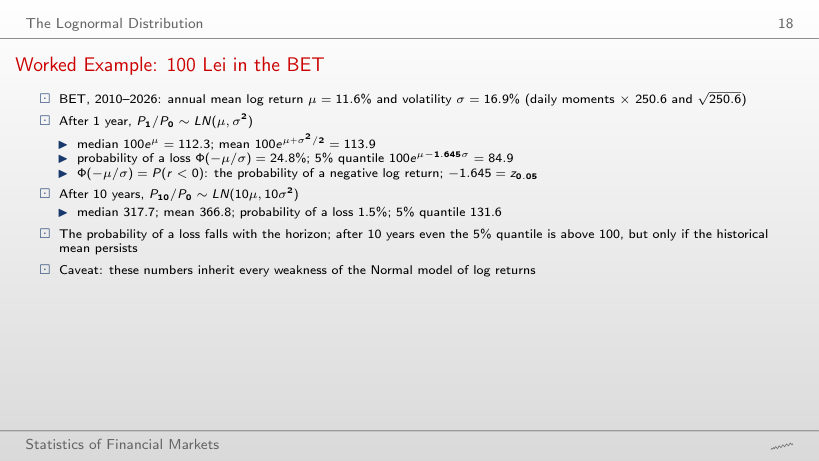
Value of 100 lei invested, PT/P0 ~ LN(Tμ, Tσ²)
Worked example: the value of 100 lei after T years
Answer
0.11%: Φ(−μ√T/σ) = Φ(−0.682 × √20) = Φ(−3.05). The mean of the log return grows with T and its standard deviation with √T, so the ratio μ√T/σ grows with √T. The median becomes 1,009.6 and the mean 1,345.6: the gap between them widens with the horizon. The calculation assumes that the mean log return of 2010–2026, 11.6% a year, persists and that log returns are Normal and independent; for the S&P 500 the same calculation gives 0.15%, for Bitcoin 0.19%.
The Central Limit Theorem
The CLT at Work (SFEclt)
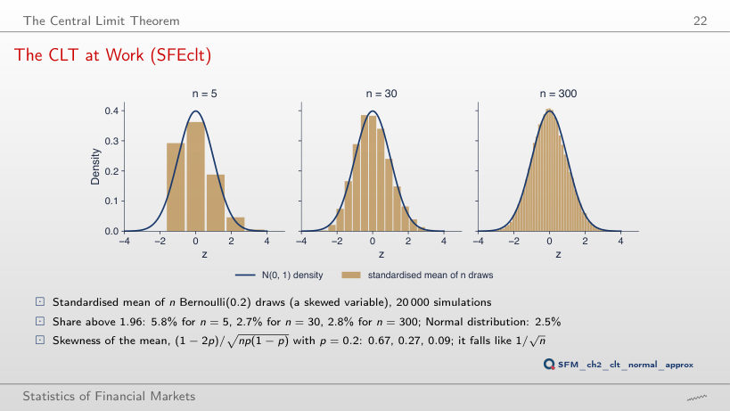
Worked example: the exact binomial distribution of the mean
Answer
No. The skewness of the mean is (1 − 2p)/√(np(1 − p)) = 0.96/√5.88 = 0.40 for n = 300 and p = 0.02, above the 0.27 for n = 30 and p = 0.2. The skewness falls as 1/√n, but from a level that depends on p: the further p is from 0.5, the more draws are needed. The page computes the exact distribution of the mean; the share above 1.96 for p = 0.2 is 5.8%, 2.6% and 2.8% (n = 5, 30, 300), and in the 20,000 simulations of the slide 5.8%, 2.7% and 2.8%.
The Normal Approximation of the Binomial (SFENormalApprox)
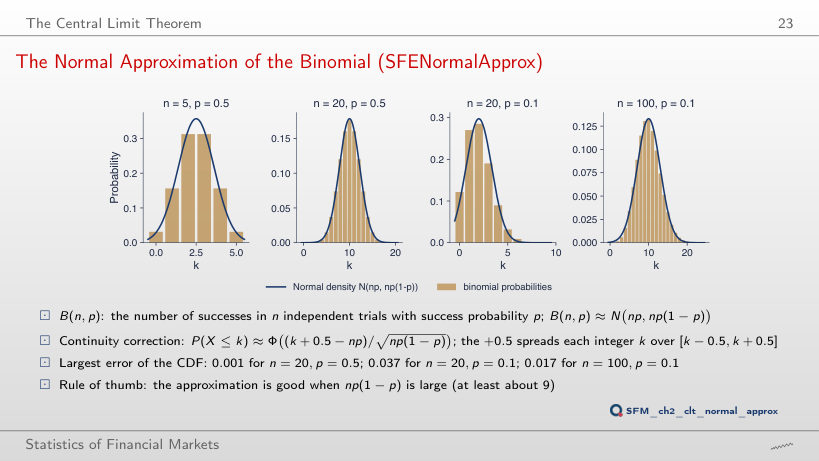
Answer
No. With the continuity correction, the largest CDF error is 0.037 at n = 20, 0.017 at n = 100 and 0.012 at n = 200. The rule np(1 − p) ≥ 9 says where the approximation becomes usable, not a guaranteed accuracy; the error falls slowly, roughly as 1/√n, with small oscillations from one n to the next. Without the continuity correction, the error at n = 20 is 0.177.
Moments and the Shape of a Distribution
What Skewness and Kurtosis Look Like
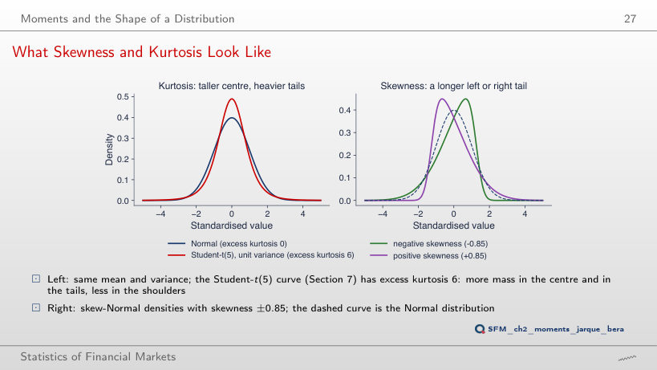
Answer
0.99. The skewness of the skew-Normal family grows with α but has a limit of about 0.995: at α = 10 it is 0.96, at α = 20 it is 0.99. A larger skewness cannot be obtained with this family. The excess kurtosis of the unit-variance Student-t distribution is 6/(ν − 4): 6 for ν = 5, 1 for ν = 10.
Daily Log Returns: Moments, 2010–2026
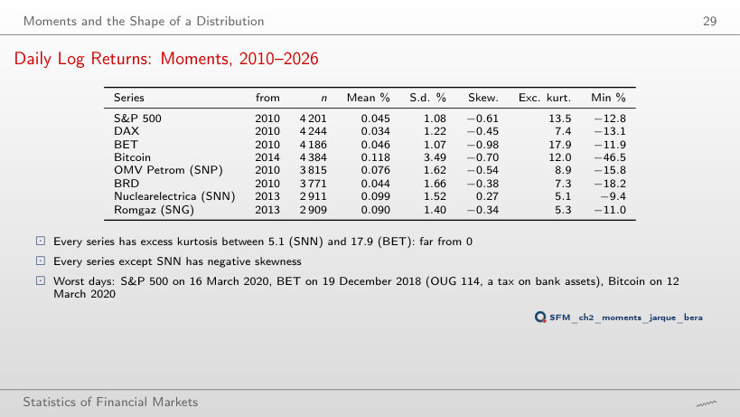
Daily log returns (%): moments
Worked example: skewness and excess kurtosis from real returns
Answer
It stays at 18.0 (17.9 on the full sample). The worst BET day, −11.9% on 19 December 2018 (OUG 114, a tax on bank assets), lies outside this period. The sample kurtosis depends on the few extreme days of each series, and these differ from market to market. Without this period, Bitcoin falls from 12.0 to 5.4 and the DAX from 7.4 to 3.1.
DAX Returns vs the Normal Density (SFEDaxReturnDistribution)
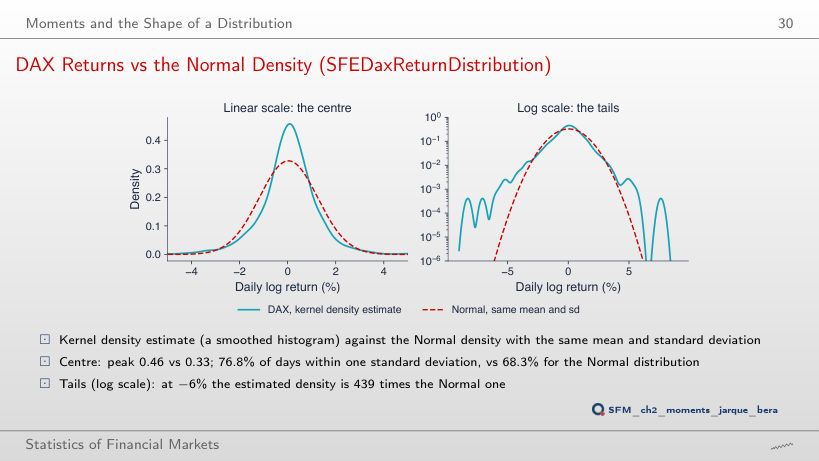
Answer
It rises to about 580; at a quarter of Scott’s bandwidth it reaches 1,100, and at twice the bandwidth it is 522. There are few observations in the tail, and the density estimate there depends on the bandwidth. For every bandwidth tried, the ratio stays in the hundreds: the conclusion that the DAX has much heavier tails than the Normal distribution does not depend on this choice. The peak of the estimated density falls from 0.47 to 0.34 as the bandwidth rises from 0.5 to 3 times Scott’s rule.
Testing Normality: Jarque–Bera and QQ Plots
Worked Example: Jarque–Bera for the S&P 500
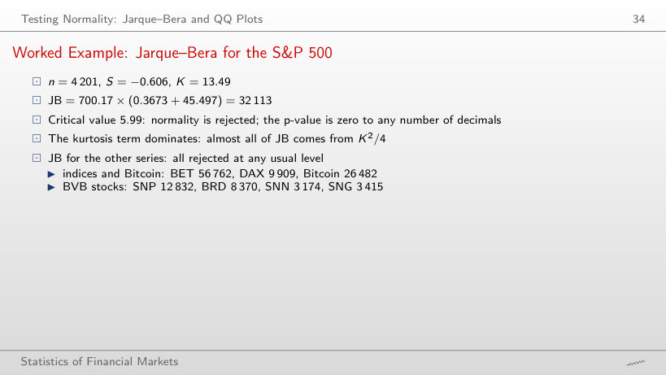
Jarque–Bera test, daily log returns
Worked example: the Jarque–Bera statistic step by step
Answer
Yes. From 2024, the smallest JB is 33, for SNP (n = 632, S = −0.03, K = 1.1), above the critical value 5.99; the S&P 500 still has 6,318, with K = 14.9, from the days of April 2025. With several hundred observations, an excess kurtosis of about 1 already gives a JB far above 5.99. Over 2010–2026, JB is between 3,174 (SNN) and 56,762 (BET).
QQ Plots against the Normal Distribution
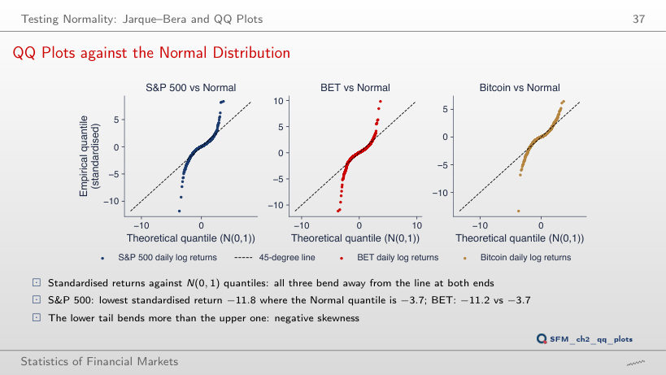
Answer
Yes. Since the start of 2021, the smallest S&P 500 return is −6.2%, on 4 April 2025: −6.0 standard deviations, against the Normal quantile −3.4. Over the whole sample, 16 March 2020 gives −11.8 against −3.7. March 2020 makes the deviation larger but does not create it: BET (−6.1) and Bitcoin (−5.8) also stay far from the line after 2021.
The Student-t Distribution
Student-t Densities with Unit Variance
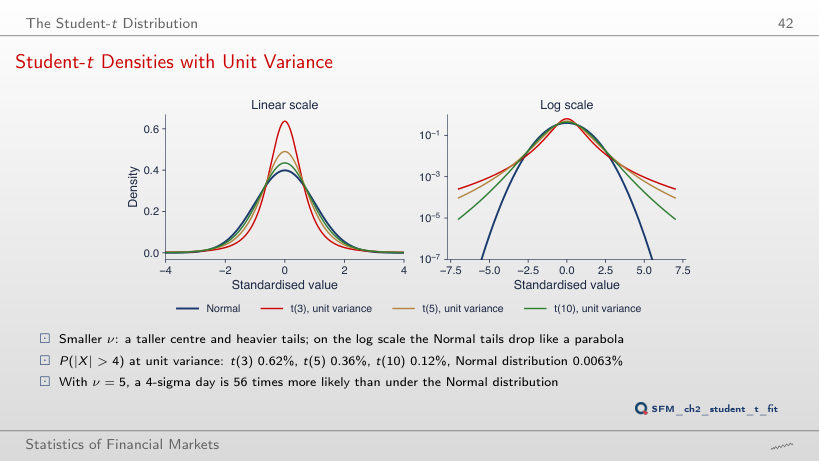
Answer
It rises: 2,316 at 5 standard deviations and about 290,000 at 6. The Student-t tail decays as a power, |x|−ν, and the Normal tail as e−x²/2, so the ratio grows without bound. At 6 standard deviations, P(|X| > 6) is 0.057% for t(5) and 0.0000002% for the Normal distribution.
Fitted Student-t: Degrees of Freedom, 2010–2026
Student-t fitted by maximum likelihood
Worked example: the variance ν/(ν − 2) and the tail probability of the fitted t
Answer
For 3: BET (3.76), Bitcoin (2.69) and SNN (3.03). The S&P 500 moves from 2.78 to 4.05, BRD from 4.67 to 6.26. Without 2020 the tails are thinner, but every ν̂ stays between 2.7 and 6.3, far from the Normal distribution (ν → ∞), and ΔAIC still favours the t distribution for every series (at least 66, for SNP). ν̂ is an estimate that depends on the sample, above all on the few extreme days it contains.
S&P 500: Normal vs Student-t Fit
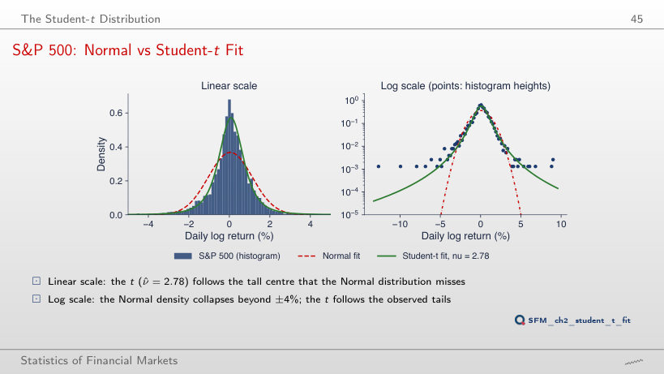
Answer
ν = 2.2: the log-likelihood is −5,704.8, against −5,714.6 at ν = 4. The maximum, −5,693.8, is at the estimate ν̂ = 2.78, and the profile is not symmetric around it: it falls slowly towards small ν and faster towards large ν. At ν = 30 the log-likelihood is −6,054.5, towards −6,301.2, the value of the Normal distribution. The AIC difference between the Normal and the t distribution is 12,606.4 − 11,393.6 = 1,212.8 in favour of the t distribution.
QQ Plots against the Fitted Student-t
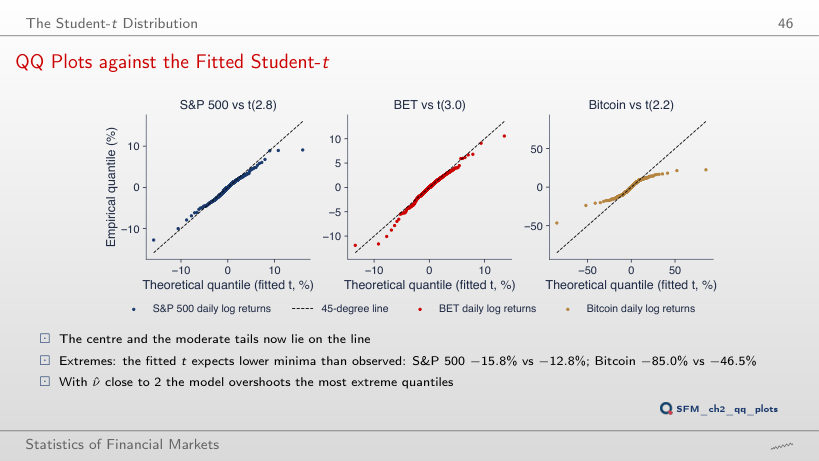
Answer
Between ν = 3 and ν = 4. With the location and scale re-estimated, the predicted minimum is −13.6% at ν = 3 and −8.7% at ν = 4, against −12.8% observed. A larger ν means thinner tails. At ν = 4 the centre fits as well, but the observed extremes again fall below the line; no single value of ν fits the centre and the extremes at the same time.
Stylised Facts of Returns
Fact 1: Heavy Tails, Counted
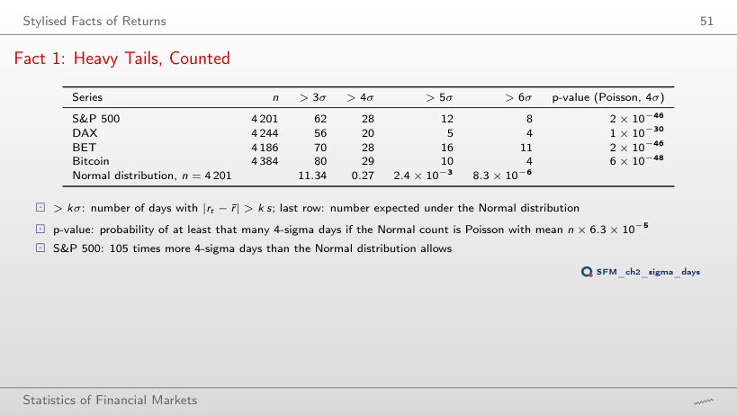
Days with |rt − r̄| > k s
Worked example: P(|Z| > k), the expected number of days and the Poisson p-value
Answer
Larger: 1 × 10⁻²⁵. More days are observed at 3σ, but the ratio to the expected number is 5.5 instead of 105, and the p-value depends on how far the observed count lies from λ relative to the spread of the Poisson distribution. Both values are far below any usual level. At 5σ and 6σ, the S&P 500 p-values are 8 × 10⁻⁴¹ and 6 × 10⁻⁴⁶.
Fact 1: 4-Sigma Days in Every Market
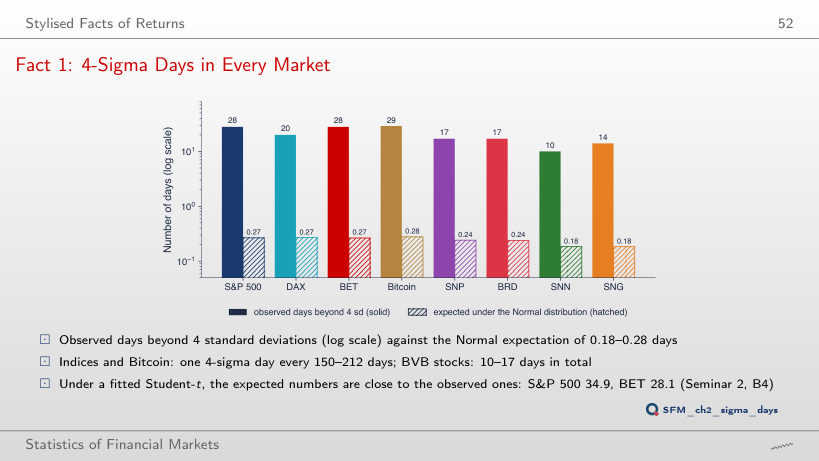
Answer
8 days, against 0.0000083 expected (one day in 507 million). BET has 11, DAX 4, Bitcoin 4. The ratio of observed to expected days grows with the threshold: 5.5 at 3 standard deviations, 105 at 4, about one million at 6.
Fact 2: Aggregational Gaussianity
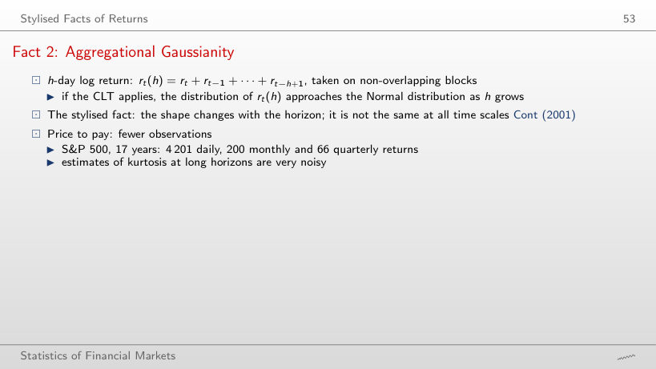
h-day log returns, non-overlapping blocks, from 2010
Answer
For 2: S&P 500 (p-value 0.00004) and DAX (0.002). For the other six, the p-value is between 0.07 (BET) and 0.71 (SNG). At h = 21 the test still rejects for 7 series, all except BRD (0.16). Not rejecting does not show that quarterly returns are Normal: with fewer than 70 observations, the test has little power.
Fact 2: Kurtosis Falls with the Horizon
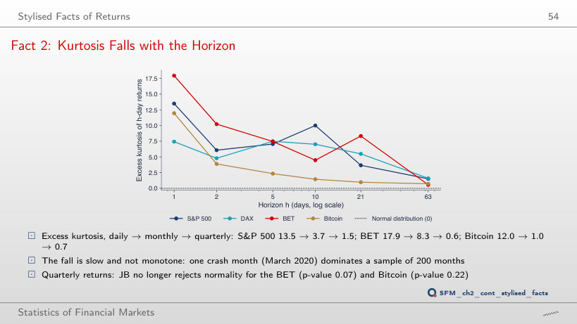
Answer
About 5.4. The monthly excess kurtosis (h = 21) falls from 3.7 to 0.8. The fourth moment depends heavily on a few extreme values: 50 days, 1.2% of the sample, account for more than half of the daily excess kurtosis. Even without them, daily returns are not Normal: 5.4 is far above 0.
Fact 2: S&P 500, Daily vs Monthly QQ Plots
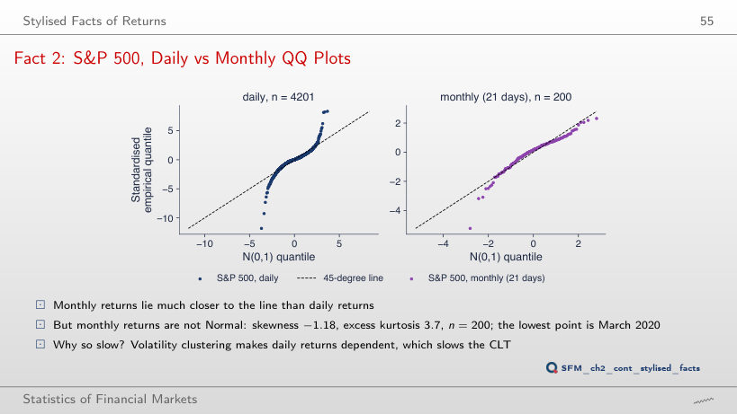
Answer
Yes: p-value 0.00004, with skewness −1.13 and excess kurtosis 1.5. For BET (p-value 0.07) and Bitcoin (0.22), the test no longer rejects at this horizon. Not rejecting does not show that quarterly returns are Normal: with 66 observations, the test has little power.
Facts 3 and 4: ACF of Returns and of Absolute Returns
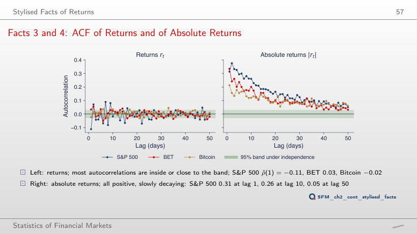
Answer
−0.04, close to the edge of the ±0.03 band. Most of the −0.11 comes from March 2020, when large falls and rebounds alternated. The autocorrelations of absolute returns stay large without this period too. The power δ shows the same for |rt|δ: for the S&P 500, the autocorrelation at lag 10 is 0.20 for δ = 0.5, 0.26 for δ = 1 and 0.22 for δ = 2.
Fact 3: Small but Not Always Zero
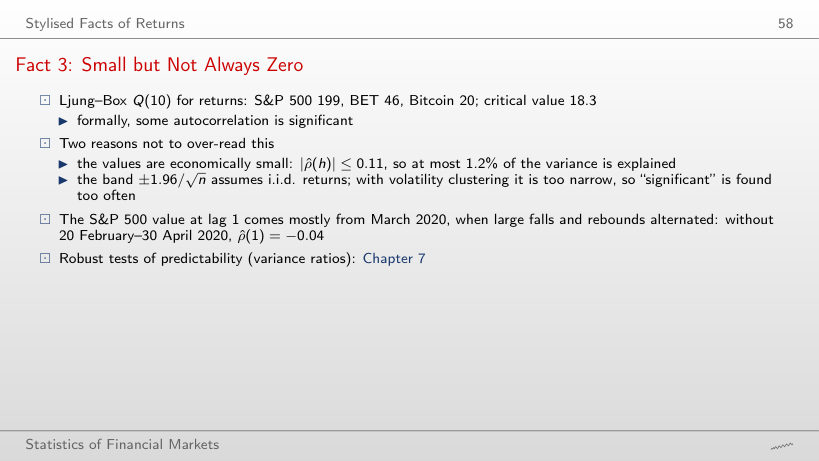
Ljung–Box test for returns and for absolute returns
Answer
For 6: Bitcoin (p-value 0.053) and BRD (0.059) no longer reject. For the S&P 500, Q(10) falls from 199 to 32. The χ² distribution of Q assumes i.i.d. returns; with volatility clustering the test rejects too often, so “significant” is a weak conclusion here. For absolute returns, Q(10) stays between 325 and 1,712 for every series.
Fact 4: Calm and Turbulent Periods
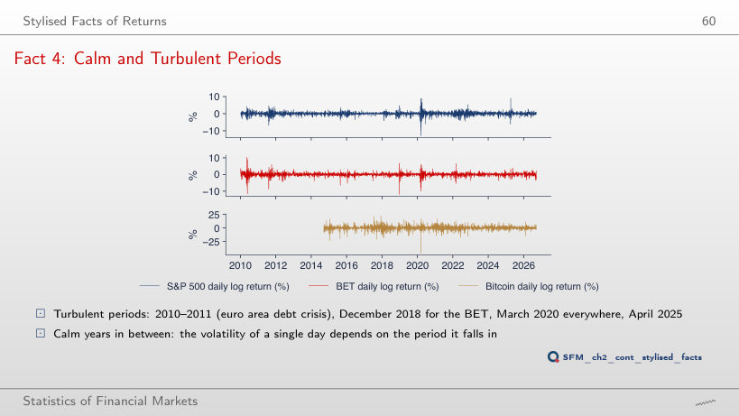
Answer
About 12 times: 3.94% a day in the window ending on 20 May 2020, against 0.32% in the window ending on 13 December 2017. The ratio of the variances is about 154. For BET the ratio of standard deviations is 8.2, for Bitcoin 8.3. The volatility of a day depends on the period it falls in.
Fact 5: Leverage Correlations
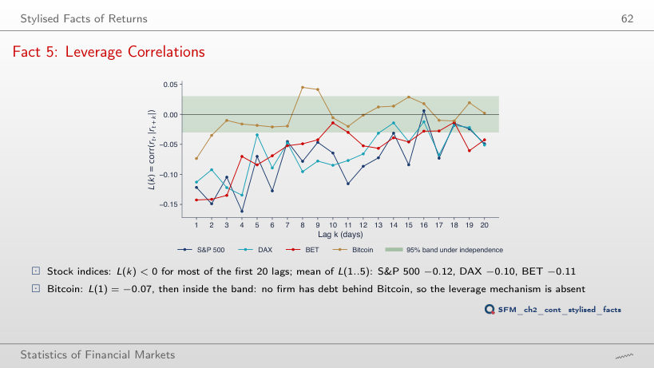
Answer
Yes. Since the start of 2021, the mean L(1..5) of the S&P 500 is −0.10 (−0.12 over the full sample), and the band is ±0.05. The leverage effect does not come from a single crisis: without 20 February–30 April 2020, the full-sample mean is −0.11. For Bitcoin, the mean stays close to zero in every variant.
Fact 6: Gain/Loss Asymmetry
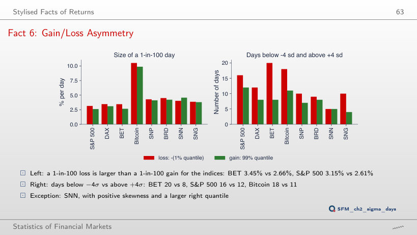
Answer
No. At 5%, the S&P 500 (1.65% against 1.54%) and the DAX (1.94% against 1.82%) still have the larger loss, but for BET (1.48% against 1.52%) and Bitcoin (5.33% against 5.35%) the gain is slightly larger. The gain/loss asymmetry shows in the far tail; at α = 0.1%, the loss is larger for all four (S&P 500 6.14% against 6.01%).
Six Facts, Eight Series
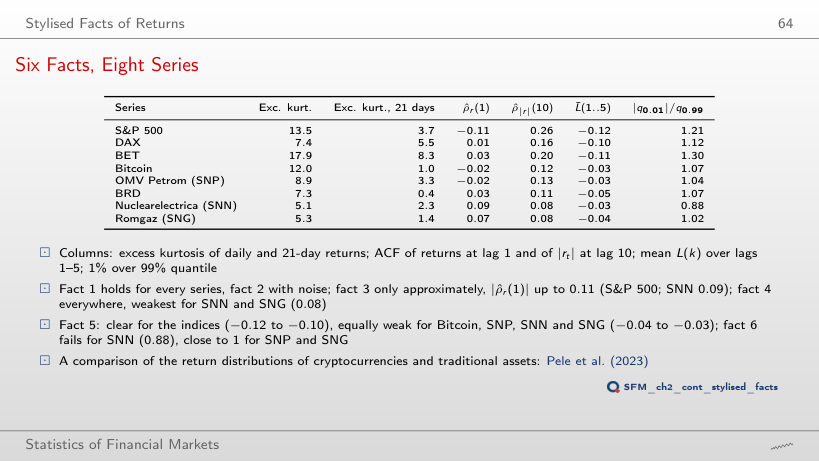
The statistic of each stylised fact
Answer
For SNP (−0.031, against −0.032) and SNN (−0.025, against −0.036). Bitcoin (−0.031, against −0.030) and SNG (−0.039, against −0.036) meet it by a small margin: the four values, between −0.025 and −0.039, are all close to the limit, so fact 5 is equally weak for Bitcoin, SNP, SNN and SNG, while the S&P 500, DAX and BET have −0.10 to −0.12 and BRD −0.05. Fact 6 is not met only for SNN, which has positive skewness (0.27) and |q0.01|/q0.99 = 0.88; SNP (1.04) and SNG (1.02) are close to 1.
Daily log returns, in %, from 2010 (Bitcoin from September 2014, SNN and SNG from November 2013) to 18 September 2026. EODHD prices: indices and Bitcoin at the close, BVB stocks adjusted for dividends and corporate actions.